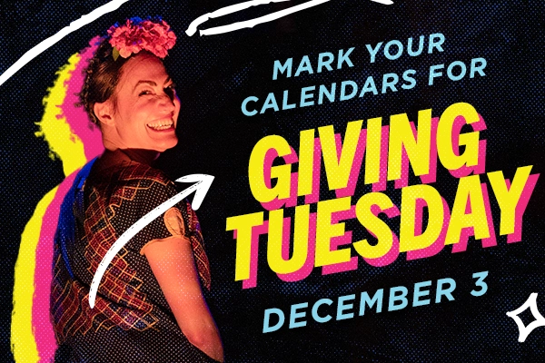
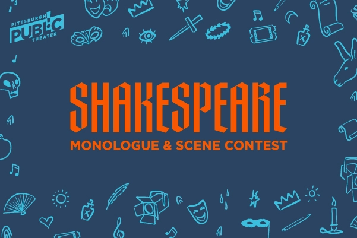

The Pittsburgh Public Theater is well-recognized for having premiered many August Wilson plays as well as for its dedication to its tradition of producing new work. It serves as one of the most prominent theaters located in the heart of the Cultural District to be serving up new and diverse theater.
In my time with the theater, I helped to create various materials for their marketing team from email headers to social media graphics to printed posters and mailings. Here is a selection of materials that I made for them. I help to create visual identities for their recurrent Black Brilliance event, Summer Sessions, and helped to refresh and make cohesive imagery for the Shakespeare Monologue & Scene Contest and alumni group Shakespeare Nation PGH.
Project info
2023-2024, Graphic design
In my time with the theater, I helped to create various materials for their marketing team from email headers to social media graphics to printed posters and mailings. Here is a selection of materials that I made for them. I help to create visual identities for their recurrent Black Brilliance event, Summer Sessions, and helped to refresh and make cohesive imagery for the Shakespeare Monologue & Scene Contest and alumni group Shakespeare Nation PGH.
Project info
2023-2024, Graphic design


